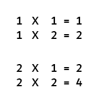
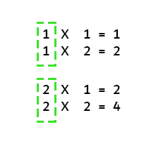
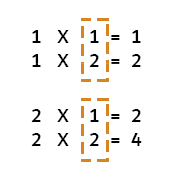

الحلقات Loops
ماهي الحلقات (Loops)؟
الحلقات هي وسيلة لتكرار حدث لعدد من المرات وفق شروط معينة.
المثال:
لنفترض أنني سأقول لك قم بعمل حلقة بحيث أنك تعد الارقام من 0 إلى 10 بإضافة 1 على العدد السابق في كل مرة.
في طلبي أعلاة حددت لك ثلاثة أشياء:
1- من الرقم كم تبدأ - من الرقم صفر
2- إلى الرقم كم - إلى الرقم 10
3- الزيادة المطلوبة في كل مرة - إضافة واحد كل مرة
لماذا نحتاج لتحديد شرط للحلقات؟
وذلك حتى لا ندخل في حلقة لا نهائية

المثال:
لنفترض أنني سأقول لك قم بعمل حلقة بحيث أنك تعد الارقام من 0 بإضافة 1 على العدد السابق في كل مرة.
في طلبي أعلاة حددت لك شيئين:
1- من الرقم كم تبدأ - من الرقم صفر
2- الزيادة المطلوبة في كل مرة - إضافة واحد كل مرة
لاحظ حددت لك البدأية وكم الزيادة المطلوبة في كل مرة ولكن لم احدد لك متى تتوقف لهذا سوف تدخل في حلقة لا نهائية ولن تتوقف عن العد.
لماذا نحتاج للحلقات في البرمجة؟
لأسباب عديدة تعتبر من اهم العناصر في البرمجة :
- بإستخدام الحلقات تستطيع عمل المهمة التي قد تأخذ منك يوم كامل اذا ما قمت بها يدوياً في اجزاء من الثانية.
- بإستخدام الحلقات تستطيع عمل المهمة المطلوبة في ثلاثة
أسطر برمجية بدلاً من الف سطر.
- بإستخدام الحلقات المرور على المصفوفات أو غيرها بشكل ديناميكي والى أخرة …
مثال:
قم بطباعة الأعداد من 1 الى 10 في الـ consloe
console.log(1); console.log(2); console.log(3); console.log(4); console.log(5); console.log(6); console.log(7); console.log(8); console.log(9); console.log(10);
شكراً لك, أرجوك قم الأن بطباعة الأعداد من 1 إلى 100.
كثير اليس كذلك كم ستحتاج أسطر وكم ستحتاج وقت  ؟
؟
اذا ما رأيك أن نستخدم طريقة أكثر ذكاء فبدلاً من تكرير كتابة الأكواد في كل مرة لنقوم بكتابة كود مرة واحدة ونجعلة يقوم بتكرار نفسة كم ما نريد من المرات بإستخدام الحلقات  .
.
لكن قبل أن نقوم بهذه العملية لنتعلم طرق عمل الحلقات.
طرق عمل الحلقات Loops
سنناقش الحلقات التالية:
1- حلقة while
2- حلقة for
3- حلقة do while
حلقة while
راجع هذا المثال؟
لنفترض أنني سأقول لك قم بعمل حلقة بحيث أنك تعد الارقام من 0 إلى 10 بإضافة 1 على العدد السابق في كل مرة.
في طلبي أعلاة حددت لك ثلاثة أشياء:
1- من الرقم كم تبدأ - من الرقم صفر (القيمة الإبتدائية)
2- إلى الرقم كم - إلى الرقم 10 (الشرط)
3- الزيادة المطلوبة في كل مرة - إضافة واحد كل مرة (الزيادة)
بنفس الفكرة سنحتاج لتحديد ثلاثة أشياء رئيسية لعمل الحلقة while كما بالصورة التالية:

قم بتجربة الكود التالي:
var i = 1; while ( i <= 10 ){ console.log( i ); i = i + 1; }
النتيجة:

شاهد كيف تم طباعة الأرقام من 1 الى 10 في اسطر قليلة.
لنقوم بطباعة الارقام من 1 إلى 100 كالتالي:
var i = 1; while ( i <= 100 ){ console.log( i ); i = i + 1; }
النتيجة:

في ثواني حصلنا على عمل كان سيأخذ مننا 100 سطر و نصف ساعة على الأقل للقيام به يدوياً
مثال:
var i = 1; while( i < 3 ){ console.log(i); i++; }
النتيجة:

تذكر أن
الأكواد التالية ستقوم بنفس العملية في حالتنا هذه
i = i + 1; i++; i+=1;
حتى تفهم الحلقات loops يجب أن نكشف ما يحصل خلف الكواليس لذا سنقوم بتحليل الكود السابق وننظر لطريقة قيام المتصفح بالمرور على الحلقة خطوة بخطوة
في الكود أعلاة أعطيت المتغير i قيمة إبتدأية بقيمة 1 ومن ثم قمت بعمل حلقة تقوم بطباعة قيمة المتغير i طالما وهي أصغر من الـ 2.
في الصورة التالية يوجد لدينا:
1- الكود الخاص بعمل الحلقة
2- الذاكرة والتي يتم تخزين قيمة المتغير فيها
3- المتصفح ونافذة الـ console
الصورة ادناة متحركة قم بالضغط عليها حتى تشاهدها من بدأية العملية وقم بالتركيز على كيفية مرور السهم بالأوامر عندما يتعرف على وجود حلقة loop.
كذلك ركز على أن عملية المقارنه تتم بإستخدام قيمة المتغير i المخزنة في الذاكرة (memory):

حلقة for
تقوم بنفس عمل حلقة while الا ان طريقة ترتيبها مختلفة واكثر تنظيماً من الحلقة while كالتالي:
لنقم بتحليل طريقة عمل الـ for loop:
ركز على التالي:
1- يتم إعطاء المتغير i قيمة إبتدائية عندما نأتي للحلقة for من السطر البرمجي السابق فقط لأول مرة ولن يتم إعادة إسناد القيمة الإبتدائية للمتغير i الا اذا عدنا للحلقة من السطر البرمجي السابق كما ستلاحظ
لاحقاً في المثال الأخير بهذا الدرس.
2- الخطوة الثانية التحقق من الشرط فإذا كان متحقق ندخل الحلقة
3- الخطوة الثالثة يتم تنفيذ ما داخل الحلقة
4- الخطوة الرابعة يتم الرجوع لعملية الزيادة او النقصان
5- الخطوة الخامسة يتم التحقق من الشرط اذا مازال متحقق
6- الخطوة السادسة تنفيذ ما داخل الحلقة
7- الخطوة السابعة الرجوع لعملية الزيادة او النقصان
8- الخطوة الثامنة يتم التحقق من الشرط اذا مازال متحقق
وهكذا حتى نصل لمرحلة عدم تحقق الشرط فيتم الخروج من الحلقة وعدم العودة لها مرة أخرى
الصورة ادناة متحركة قم بالضغط عليها حتى تشاهدها من بدأية العملية

مثال:
بإمكاننا أيضاً عمل حلقة تقوم بطباعة الأرقام من 10 إلى 1
سنقوم بعمل بإعطاء المتغير i قيمة إبتدائية بـ 10 ونضع شرط بأن تكون القيمة أكبر او يساوي 1 ومن ثم نقوم في كل مرة بإنقاص رقم كالتالي:
for (var i = 10 ; i >= 1 ; i--){ console.log(i); }
النتيجة:

حلقة do while
هذه الحلقة تقوم بتنفيذ الأوامر على الأقل مرة واحدة حتى وإن كان الشرط غير متحقق لانها تتحقق من الشرط بعد المرور بالأوامر.
قبل أن نأخذ مثال عن الـ do while لنأخذ هذا المثال:
var i = 0; while( i > 0){ console.log(i); i--; }
لاحظ انني قمت بتعريف المتغير i واسندت الية القيمة 0 ومن ثم قمت بعمل حلقة شرطها أن يكون الرقم اكبر من 0 ما يعني ان الشرط غير متحقق في حالتنا فلن يتم الدخول للحلقة كالتالي:
الصورة ادناة متحركة قم بالضغط عليها حتى تشاهدها من بدأية العملية

لاحظت كيف أن الشرط لم يكن متحقق لهذا لم يتم الدخول للحلقة while.
لكن لنفترض أننا نريد لسبب من الأسباب أن يتم تنفيذ مابداخل الحلقة على الأقل مرة واحدة بغض النظر عن تحقق الشرط في المرة الأولى.
في هذه الحالة سنستخدم do while
سأقوم بصياغة نفس الحلقة السابقة ولكن هذه المرة بإستخدام do while
مثال:
var i = 0; do{ console.log(i); i--; } while( i > 0);
هذه المرة سيتم طباعة قيمة المتغير i كالتالي:
الصورة ادناة متحركة قم بالضغط عليها حتى تشاهدها من بدأية العملية

الـ nested loops
بإمكاننا وضع حلقة بداخل حلقة لنأخذ مثال على ذلك.
لنقم بطباعة جدول الضرب ولنأخذ على سبيل المثال جدول ضرب الرقم 1 و الرقم 2 لنقوم بتحليلة:

هل تلاحظ أن في جدول ضرب الأعداد الخاص بكل عدد أنه يوجد جزء ثابت لا يتغير الا بعد أن يتم ضربة بـ 12 رقم كالتالي:

نستنتج أنه لدينا في جدول الضرب حلقتين الأولى لا تتغير الإ بعد أن تكمل الحلقة الأخرى 12 دورة.
أي انه من أجل جدول ضرب الرقم واحد بإمكاننا عمل حلقة خارجية لتقوم تقوم بإعطائنا الرقم الثابت 1 ومن ثم بدأخل هذه الحلقة حلقة أخرى تقوم بعمل 12 دورة وتضرب الرقم 1 بهذه الارقام وبعد إنتهاء الحلقة الداخلية من ذلك يتم إضافة واحد للحلقة الخارجية ليبدأ جدول ضرب الرقم 2 بـ 12 دورة أخرى داخلية.
الكود كالتالي:
نريد حلقة خارجية تبدأ من الرقم 1 وتنتهي عند الرقم 12 ويتم إضافة 1 لكل عدد في كل دورة من هذه الحلقة:
for( var i=1 ; i <= 12 ; i++ ){ }
الأن أريد حلقة داخلية تقوم كذلك بعمل 12 دورة تبدأ من الرقم 1 وتنتهي عند الرقم 12 ويتم إضافة 1 لكل عدد في كل دورة:
for( var i=1 ; i <= 12 ; i++ ){ for( var j=1 ; j <= 12 ; j++ ){ } }
رائع إنتهينا من عمل جدول الضرب تبقى أن نقوم بطباعته كالتالي:
for( var i=1 ; i <= 12 ; i++ ){ for( var j=1 ; j <= 12 ; j++ ){ console.log( i * j ); } }
النتيجة:
ستجد أنه تم طباعة مجموعة من الأرقام أول رقم هو 1 وأخر رقم هو 144
نعم هذا هو جدول الضرب فاول عدد هو 1*1 = 1 واخر عدد هو 12*12 يساوي 144
لنقم بتحسين جدول الضرب حتى نجعلة مرتب ومفهوم:
for( var i=1 ; i <= 12 ; i++ ){ for( var j=1 ; j <= 12 ; j++ ){ console.log( i + " X " + j + " = " + i * j ); } }
قمت بعمل التاليi + "*" + j + "=" + i * j حيث أنه سيتم كل مرة طباعة الرقم المخزن في المتغير i و j وبينهما علامة X ما يدل على علامة الضرب ثم علامة
= ثم سيتم القيام بعملية ضرب المتغيرين i*j والتعويض بالناتج بدلهما.
اذا لم تفهم عملية الربط بينهم راجع الدرس التالي في جزئية الـ string concatenation
النتيجة:

وأخيراً لن أترككم بدون أن تفهموا المنطق خلف هذه العملية وسنقوم بتحليل بعض الخطوات لجزء من جدول ضرب 1 و 2 كالتالي:

نلاحظ ان الرقم الثابت طوال فترة الدورة الداخلية تبدأ من الرقم 1 وتنتهي عند الرقم 2 لهذا ستكون الحلقة الخارجية كالتالي:

for( var i=1 ; i <= 2 ; i++ ){ }
نلاحظ ان ارقام الدروة الداخلية كذلك تتم من 1 إلى 2 لذا ستكون الحلقة الداخلية كالتالي:

for( var i=1 ; i <= 2 ; i++ ){ for( var j=1 ; j <= 2 ; j++ ){ console.log( i + " X " + j + " = " + i * j ); } }
العملية التي تتم خلف كواليس المتصفح كالتالي:
الصورة ادناة متحركة قم بالضغط عليها حتى تشاهدها من بدأية العملية
.

لاحظ كيف يتم دائماً إعادة تعيين القيمة الإبتدائية للمتغير j عندما نعود الى الحلقة الخارجية ونأتي للحلقة الداخلية من السطر البرمجي السابق فالمتصفح يعتبر الحلقة وكأنها او مرة يراها فيعاملها معاملة أي حلقة جديدة فيبدأ اول
خطوة بإسناد القيمة الإبتدائية.
هذه كانت الفكرة الرئيسية للحلقات Loops فقم بمراجعه دروس المسار المرتبطة بهذا الموضوع فما يزال هناك تفاصيل لم يسعني الوقت لأشرحها وفي حال لديك أي سؤال قم بطرحة وسأقوم بمساعدتك.
أرجوا ان يكون الدرس وأضح وبهذا تبقى لنا شرح الـ functions و الـ objects وسنبدأ في الـ Git خلال هذه اليومين حتى نكمل الدروس قبل فتح الإختبار إن شاء الله.